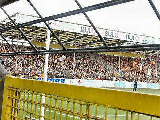
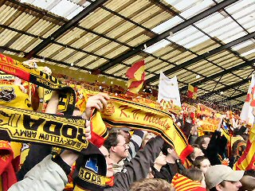
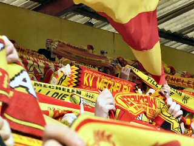
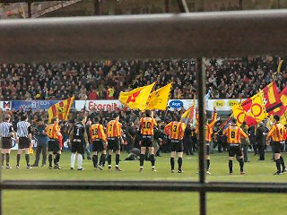
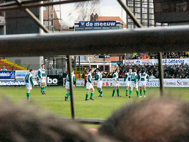
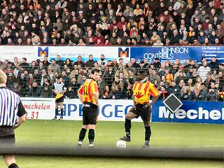
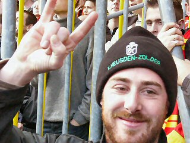
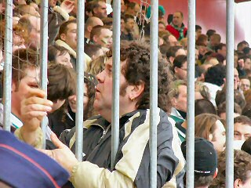
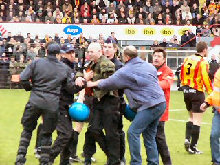
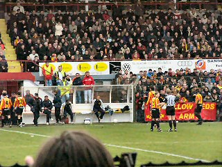

|
KV Mechelen- KRC Mechelen (0-1) 1 februari 2004 |

Vandaag stond de return van de belangrijke
stadsderby op het programma. De uitwedstrijd
werd op 27 september met 1-2 door KVM
gewonnen.

Het stadion Achter de Kazerne was uitverkocht.

13.000 toeschouwers in de derde klasse!!!!

Het vertrouwde vlagvertoon.

Er waren 1600 Racing-supporters.




Nadat Slachmuylders de gasten op 0-1 heeft
gezet wordt de wedstrijd 5 min. stilgelegd voor
het optreden van deze veldbestormer.

De spelers krijgen derhalve een extra pauze. De
wedstrijd eindigt spijtig genoeg in 0-1.
Foto's: Rob Hoeymakers (Koffieboer)